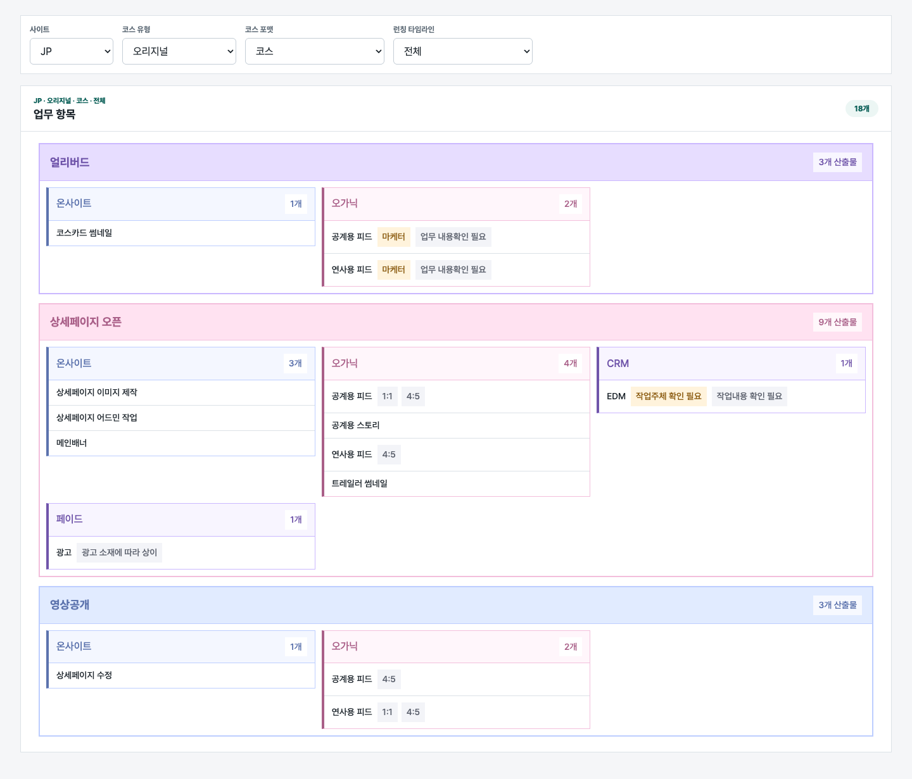
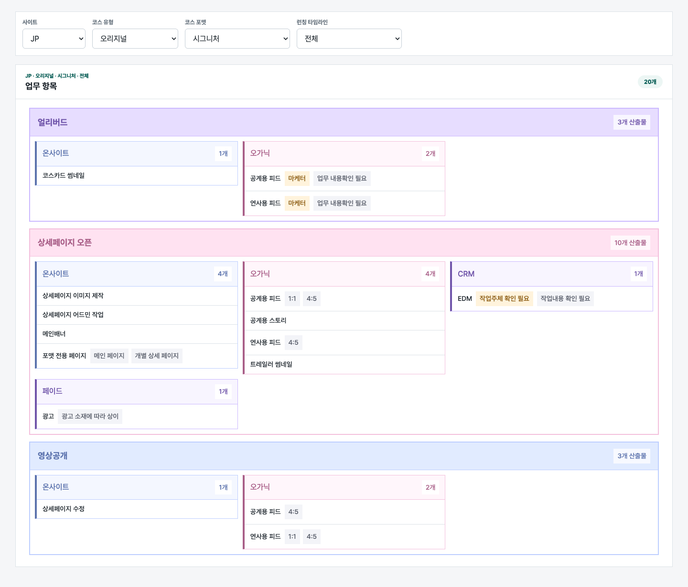
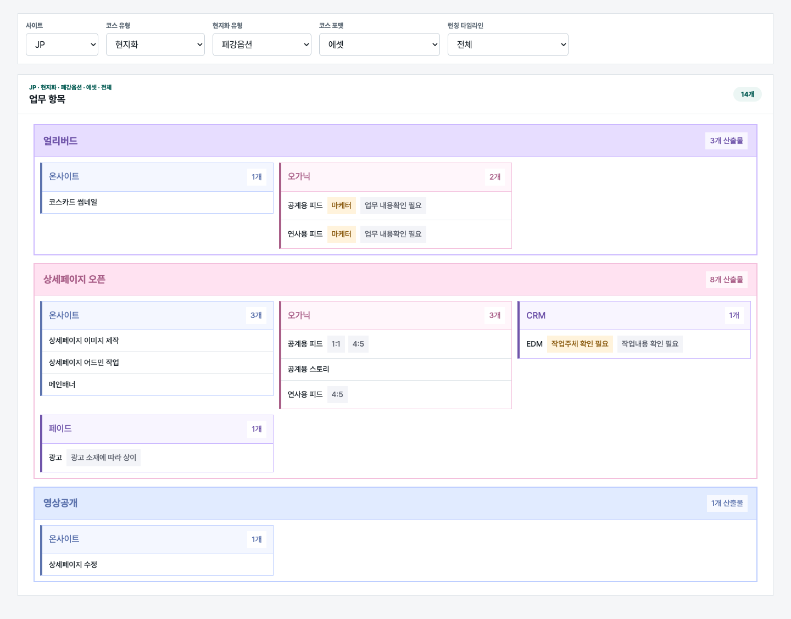
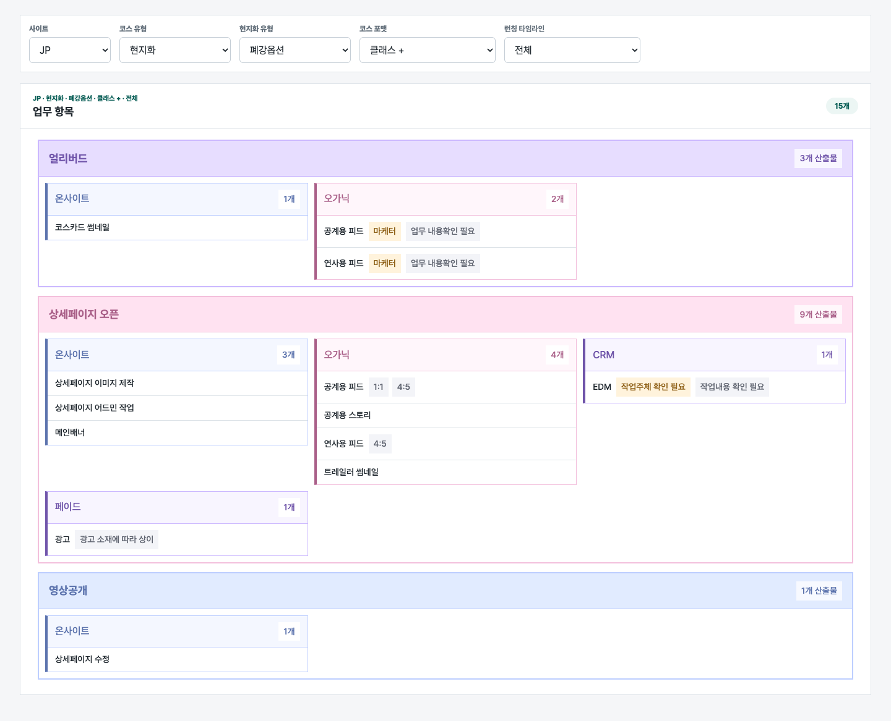
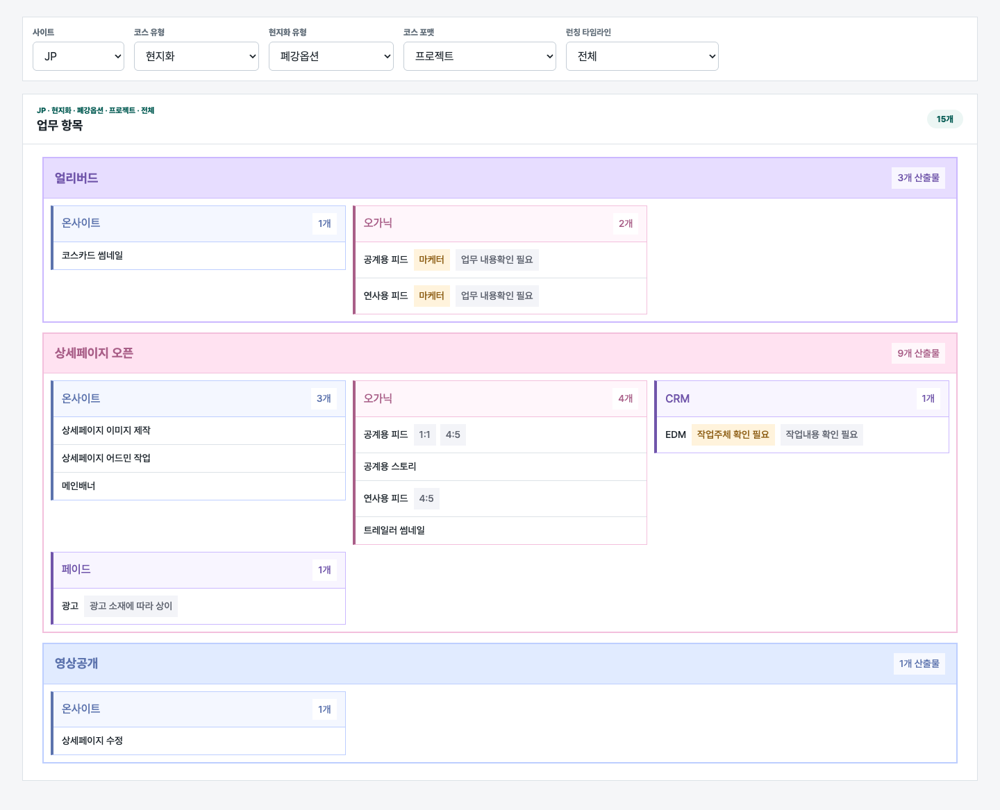
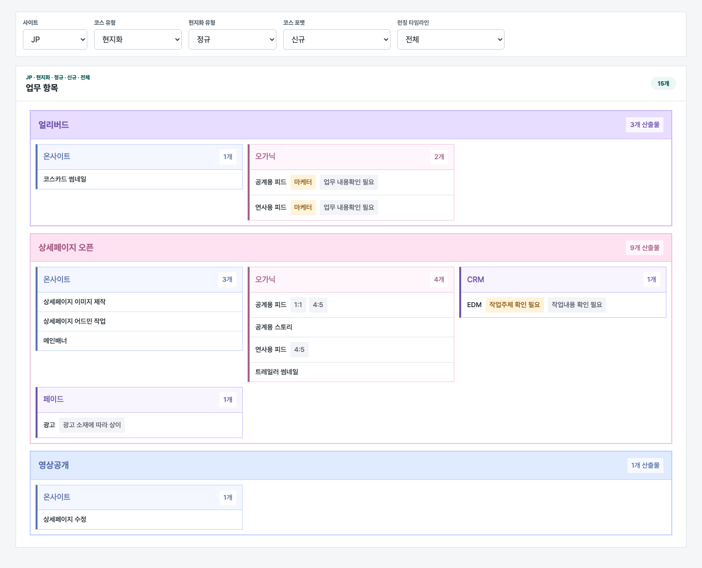
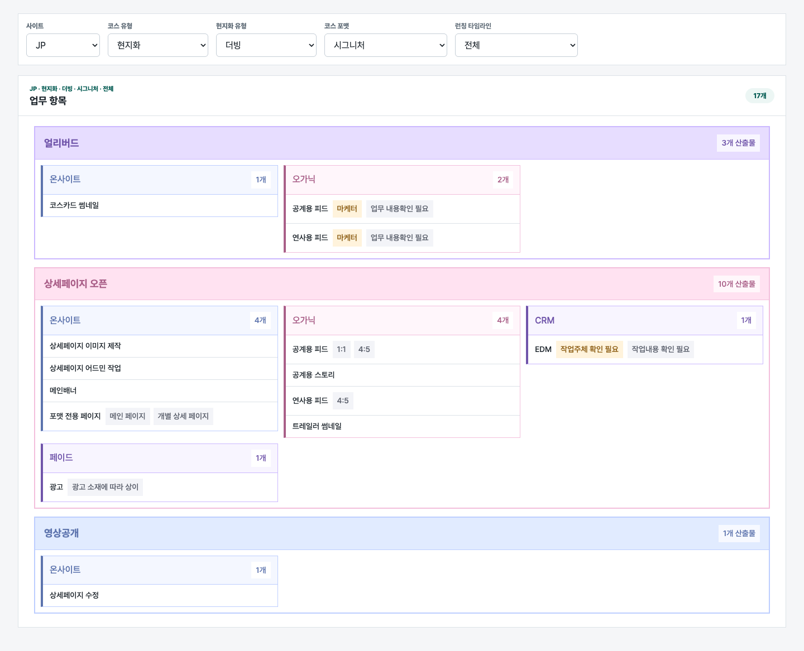
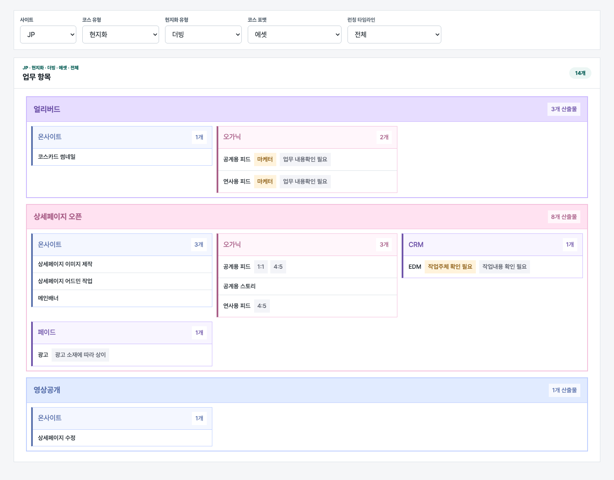
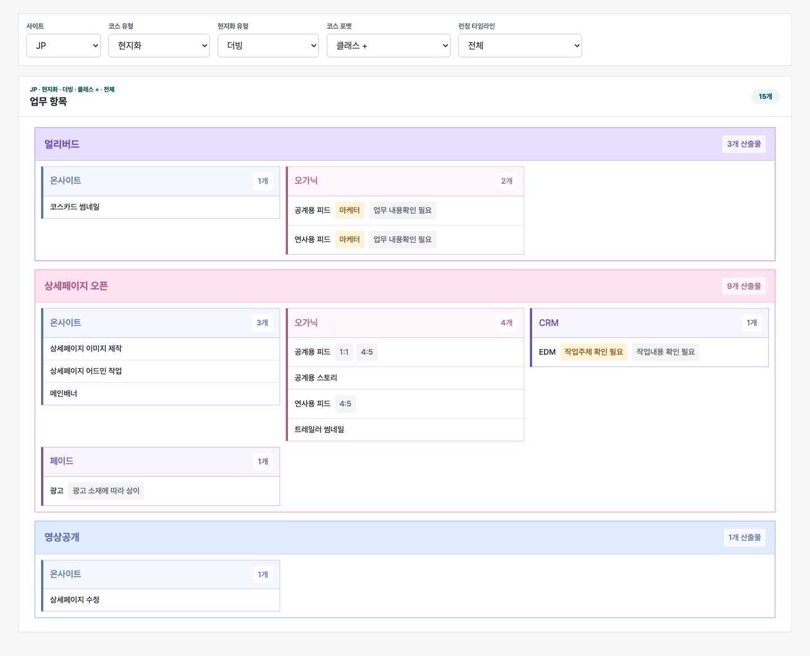

1. JP / 오리지널 / 코스18개 · JP · 오리지널 · 코스 · 전체
32개 케이스

1. JP / 오리지널 / 코스18개 · JP · 오리지널 · 코스 · 전체

2. JP / 오리지널 / 시그니처20개 · JP · 오리지널 · 시그니처 · 전체
18개 · JP · 오리지널 · 딕셔너리 · 전체
18개 · JP · 오리지널 · 에셋 · 전체
18개 · JP · 오리지널 · 클래스 · 전체
18개 · JP · 오리지널 · 클래스 + · 전체
18개 · JP · 오리지널 · 프로젝트 · 전체
18개 · JP · 오리지널 · 신규 · 전체
15개 · JP · 현지화 · 폐강옵션 · 코스 · 전체
15개 · JP · 현지화 · 폐강옵션 · 시그니처 · 전체
15개 · JP · 현지화 · 폐강옵션 · 딕셔너리 · 전체

12. JP / 현지화 / 폐강옵션 / 에셋14개 · JP · 현지화 · 폐강옵션 · 에셋 · 전체
15개 · JP · 현지화 · 폐강옵션 · 클래스 · 전체

14. JP / 현지화 / 폐강옵션 / 클래스 +15개 · JP · 현지화 · 폐강옵션 · 클래스 + · 전체

15. JP / 현지화 / 폐강옵션 / 프로젝트15개 · JP · 현지화 · 폐강옵션 · 프로젝트 · 전체
15개 · JP · 현지화 · 폐강옵션 · 신규 · 전체
15개 · JP · 현지화 · 정규 · 코스 · 전체
17개 · JP · 현지화 · 정규 · 시그니처 · 전체
15개 · JP · 현지화 · 정규 · 딕셔너리 · 전체
14개 · JP · 현지화 · 정규 · 에셋 · 전체
15개 · JP · 현지화 · 정규 · 클래스 · 전체
15개 · JP · 현지화 · 정규 · 클래스 + · 전체
15개 · JP · 현지화 · 정규 · 프로젝트 · 전체

24. JP / 현지화 / 정규 / 신규15개 · JP · 현지화 · 정규 · 신규 · 전체
15개 · JP · 현지화 · 더빙 · 코스 · 전체

26. JP / 현지화 / 더빙 / 시그니처17개 · JP · 현지화 · 더빙 · 시그니처 · 전체
15개 · JP · 현지화 · 더빙 · 딕셔너리 · 전체

28. JP / 현지화 / 더빙 / 에셋14개 · JP · 현지화 · 더빙 · 에셋 · 전체
15개 · JP · 현지화 · 더빙 · 클래스 · 전체

30. JP / 현지화 / 더빙 / 클래스 +15개 · JP · 현지화 · 더빙 · 클래스 + · 전체
15개 · JP · 현지화 · 더빙 · 프로젝트 · 전체
15개 · JP · 현지화 · 더빙 · 신규 · 전체